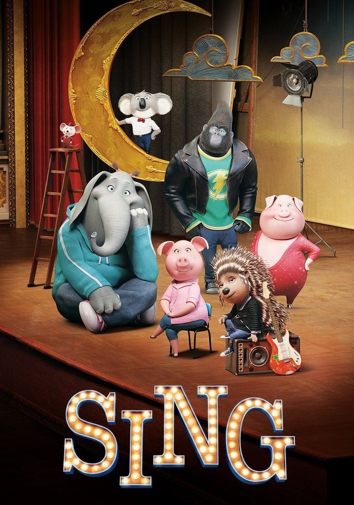
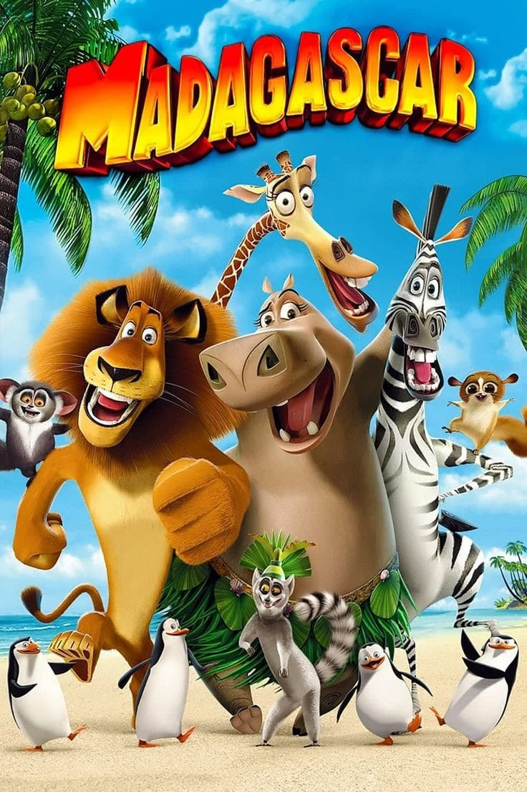

The Boss Baby
Ketika Tim yang berusia 7 tahun menemukan saudara laki-laki barunya adalah seorang eksekutif yang mengenakan jas, dia dengan enggan setuju untuk bekerja sama dengan Boss Baby dalam misi rahasia yang penuh dengan tawa dan petualangan!
Kung fu Panda

Yang mengejutkan semua orang, termasuk dirinya sendiri, Po, panda yang kelebihan berat badan dan canggung, dipilih sebagai pelindung Lembah Damai. Kesesuaiannya akan segera diuji saat musuh bebuyutan lembah datang kembali.
sing

Ketika koala yang selalu optimis mengadakan kompetisi menyanyi untuk menyelamatkan teaternya yang gagal, hewan di seluruh kota berkumpul untuk menjadi sorotan dan mengejar impian mereka!
Angry Bird Movie

Ketika sebuah pulau yang dihuni oleh burung-burung bahagia yang tidak bisa terbang dikunjungi oleh babi-babi hijau misterius, terserah tiga orang buangan yang tidak terduga - Merah, Chuck, dan Bom - untuk mencari tahu apa yang sedang dilakukan babi-babi itu.
Madagascar

4 hewan yang dimanjakan dari Kebun Binatang Central Park New York terdampar di pulau Madagaskar yang eksotis, dan menyadari bahwa itu hutan sungguhan di luar sana!
Copyright © 2023 by Fahma, Frida, and Wiwid